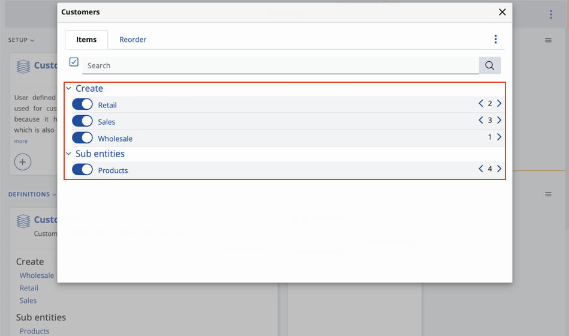
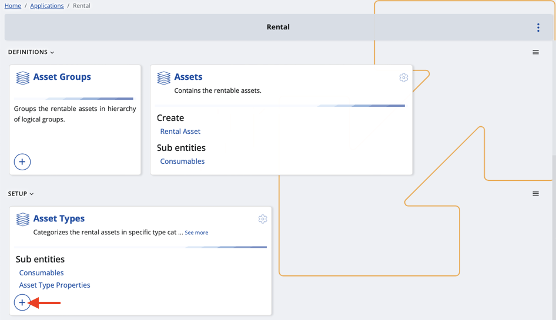
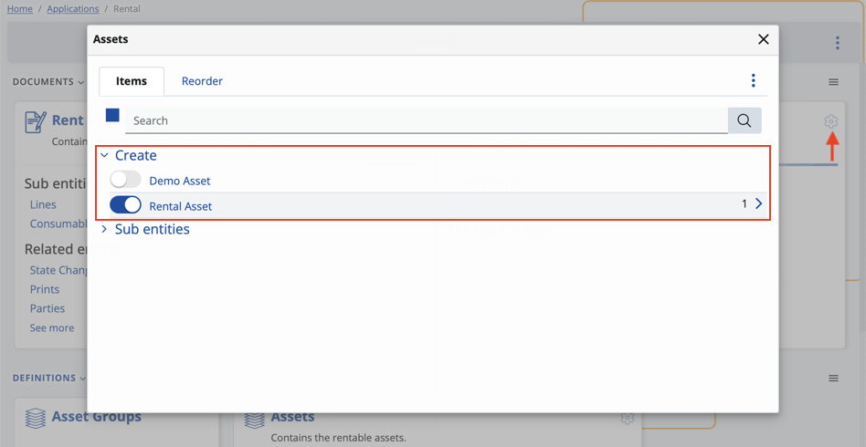

How to separate views by object category
Object categories (OCs) can be accessed from within the panels of bigger entities such as Customer, Asset and Document.
You can integrate them into different creation forms and make the views of these forms distinguishable from one another.

Example
Some forms prioritise certain fields over others.
When issuing a return of a product, for instance, you may want to request the original price but not the birth date of a client.
Depending on its use-case, an object category will represent one or more types - Customer Type, Asset Type and Document Type.
If you enable an OC for a panel, it will be possible to start creating a document or an entity from there with that OC already selected for it.
Here's a list of data types and supported object categories:
Applications / Asset Мanagement: Managed Asset - Managed Asset Type
Applications / Rental: Asset - Asset Type
Applications / Service: Service Object - Service Object Type
CRM / Common: Customer - Customer Type
Finance / Assets: Asset - Asset Category
General / Common: Parties - Party Type (exception, because it is an Entity Type specifier)
General / Common: Document - Document Type (exception, because documents are also separated by leaf entity type)
General / Products: Products - Product Type
Logistics / Common: Logistic Units - Logistic Unit Type
Logistics / Procurement: Supplier - Supplier Type
Process
- You need to create or have at least one object category in advance.
Not all entities have OCs, so you’ll need to add them manually by clicking the circular plus button found on the respective panel.

- Enable the new OC for the respective panel by clicking the settings button at the top-right corner.
For most document types, it's possible to reveal or hide existing object categories for the Create and other sections.

- Click the object category visualized on your panel.
This will take you to the creation form of the document or entity where the OC is already applied.
Keep in mind that the field will be read-only and unable to be changed.

- Customize the view of the form through the Show/hide panels window. This allows you to enable or disable certain fields.
If you click Save as default view, the form's new view will be applied and associated with a particular object category.
To bring back the standard settings, click Restore default settings.